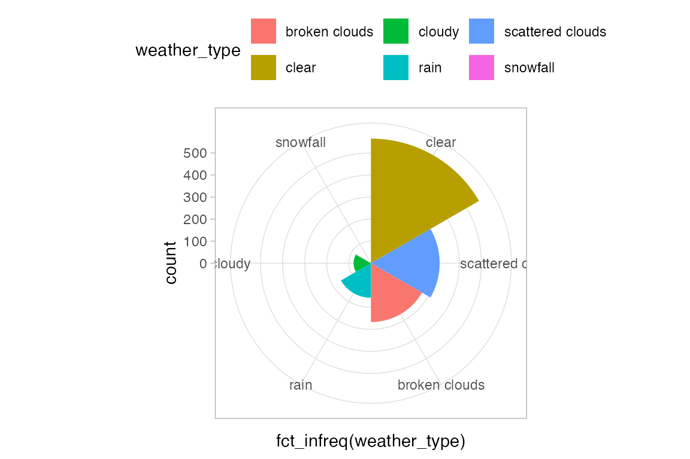
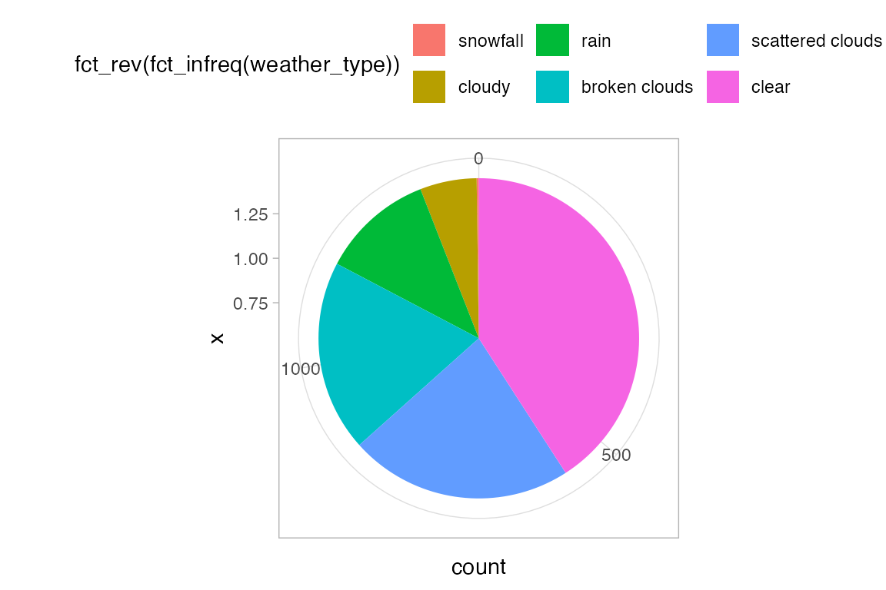
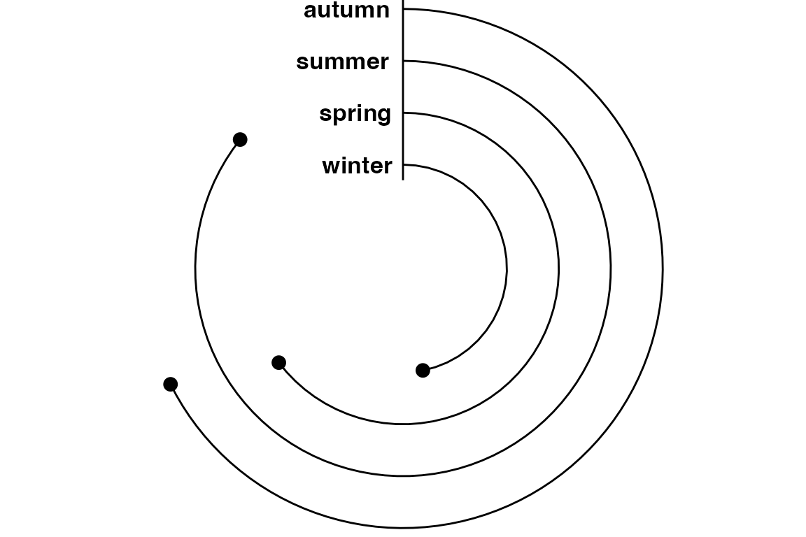
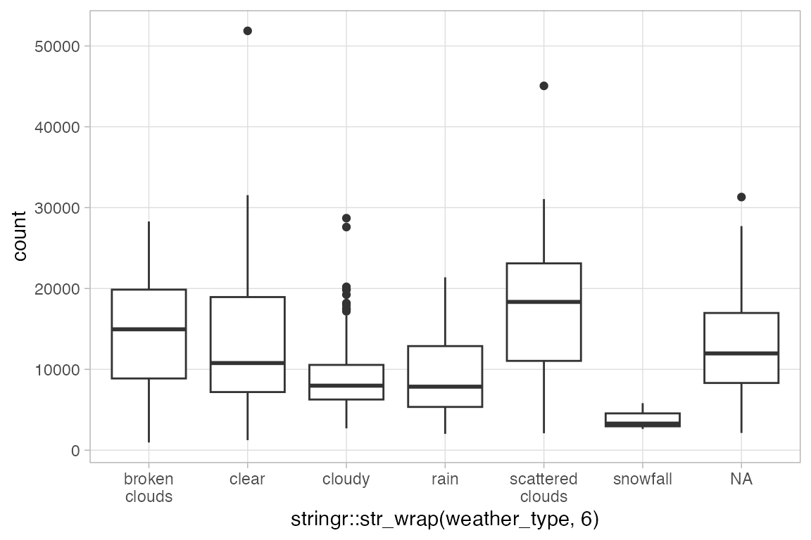
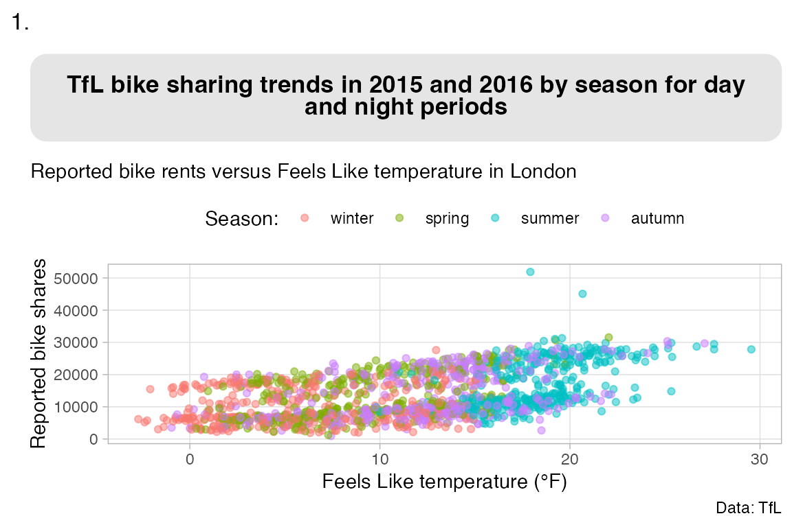
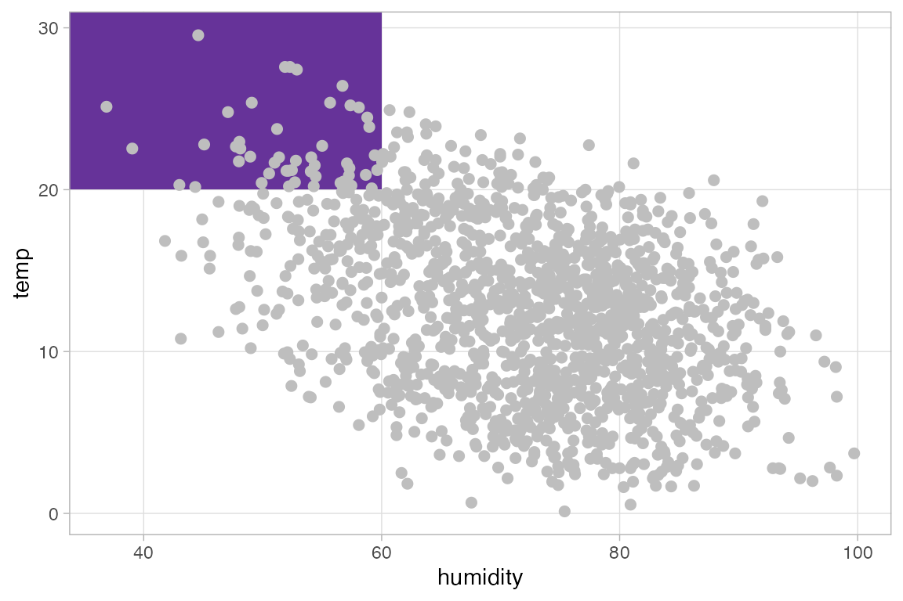
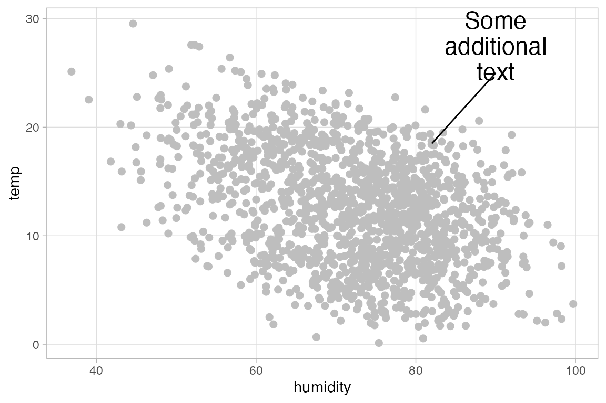
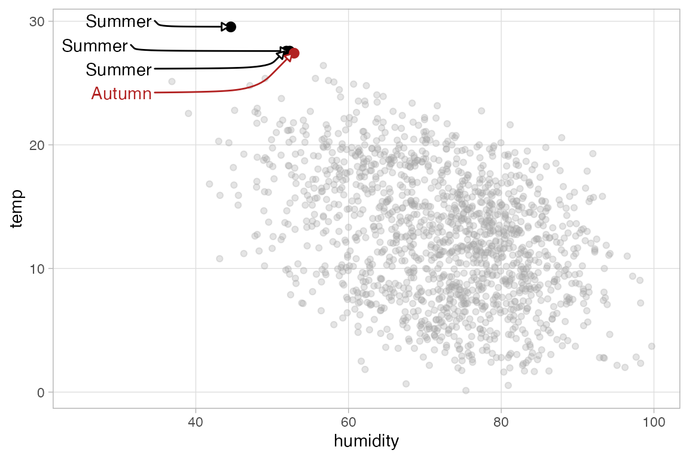
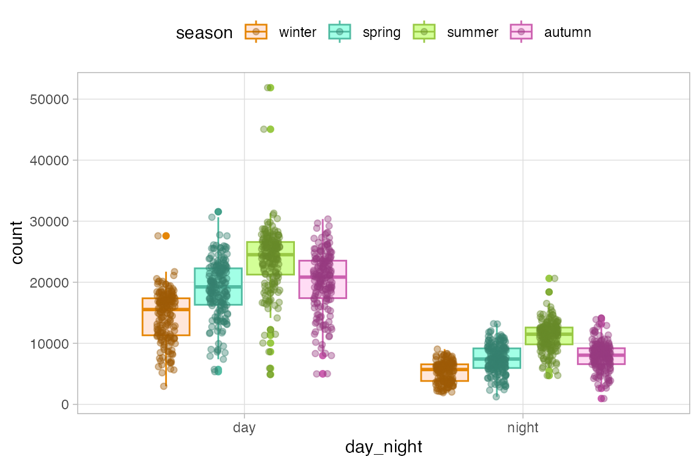
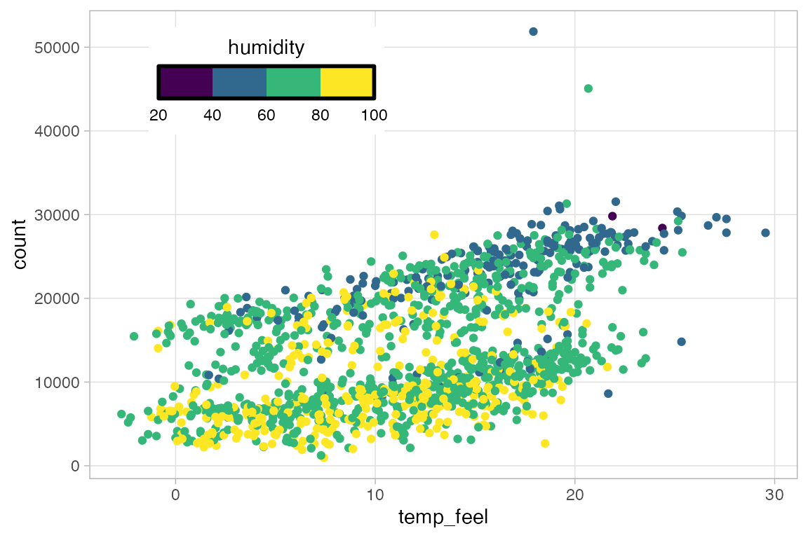

13 RStudio conf 2022 ggplot2 workshop
Source: Cédric Scherer, Graphic Design with ggplot2 at RStudio conf 2022. All examples are derived from this workshop.
13.1 The Grammar of Graphics
| Component | Function | Explanation |
|---|---|---|
| Data | ggplot(data) |
The raw data that you want to visualize. |
| Aesthetics | aes() |
Aesthetic mappings between variables and visual properties. |
| Geometries | geom_*() |
The geometric shapes representing the data. |
| Statistics | stat_*() |
The statistical transformations applied to the data. |
| Scales | scale_*() |
Maps between the data and the aesthetic dimensions. |
| Coordinate system | coord_*() |
Maps data into the plane of the data rectangle. |
| Facets | facet_*() |
The arrangement of the data into a grid of plots. |
| Visual themes |
theme()/theme_*()
|
The overall visual defaults of a plot. |
13.2 Aesthetic mappings
- positions:
x, y - colors:
color,fill - shapes:
shape,linetype - size:
size - transparency:
alpha - groupings:
group
13.2.1 Setting vs Mapping of visual properties
Aesthetics are set within geom_*() and are mapped within aes(). See line 6 in the examples below.
ggplot(
bikes,
aes(x = temp_feel, y = count)
) +
geom_point(
color = "#28a87d",
alpha = .5
)
ggplot(
bikes,
aes(x = temp_feel, y = count)
) +
geom_point(
aes(color = season),
alpha = .5
)You can map expressions directly within ggplot2.
ggplot(
bikes,
aes(x = temp_feel, y = count)
) +
geom_point(
aes(color = temp_feel > 20),
alpha = .5
)13.2.2 Local vs Global encoding
- Local encoding: aesthetic properties only correspond to the specified geom.
-
Global encoding aesthetic properties correspond to all geoms. This results in adding a
groupaesthetic to geoms such asgeom_smooth()
ggplot(
bikes,
aes(x = temp_feel, y = count)
) +
geom_point(
aes(color = season),
alpha = .5
) +
geom_smooth(method = "lm")
ggplot(
bikes,
aes(x = temp_feel, y = count,
color = season)
) +
geom_point(
alpha = .5
) +
geom_smooth(method = "lm")Global encodings are overridden by local encodings. In this case, this leads to a warning message. You can get rid of the warning message by setting a local color, such as color = "black".
ggplot(
bikes,
aes(x = temp_feel, y = count,
color = season)
) +
geom_point(
alpha = .5
) +
geom_smooth(
aes(group = day_night),
method = "lm")
#> `geom_smooth()` using formula = 'y ~ x'
#> Warning: The following aesthetics were dropped during statistical transformation:
#> colour.
#> ℹ This can happen when ggplot fails to infer the correct grouping structure in
#> the data.
#> ℹ Did you forget to specify a `group` aesthetic or to convert a numerical
#> variable into a factor?13.3 Label basics
For more detailed info on labels, see Section 13.7.
Create base plot
Code
g <-
ggplot(
bikes,
aes(x = temp_feel, y = count,
color = season,
group = day_night)
) +
geom_point(
alpha = .5
) +
geom_smooth(
method = "lm",
color = "black"
)
13.3.1 labs labs()
- Aesthetic name-value pairs:
x = "Date",color = "Season" titlesubtitle-
caption: Displayed at the bottom-right of the plot by default. -
tag: Displayed at the top-left of the plot by default. -
alt: Text used for the generation of alt-text for the plot.
13.3.2 Specific functions
13.4 Themes
See notes on themes for more information.
13.4.1 Theme functions
-
theme(): modify components of a theme. -
theme_set(): completely overrides the current theme. -
theme_update(): Update individual elements of a plot.
# Set theme for remaining plots
theme_set(theme_light())
# Update theme
theme_update(
panel.grid.minor = element_blank(),
plot.title = element_text(face = "bold"),
legend.position = "top",
plot.title.position = "plot"
)
g13.5 Scales
The scale_*() components control the properties of all the aesthetic dimensions mapped to the data.
- Positions:
scale_x_*()andscale_y_*()-
continuous(),discrete(),reverse(),identity(),log10(),sqrt(),date()
-
- Colors:
scale_color_*()andscale_fill_*()-
continuous(),discrete(),manual(),identity(),gradient(),gradient2(),brewer()
-
- Sizes:
scale_size_*()andscale_radius_*()-
continuous(),discrete(),manual(),identity()ordinal(),area(),date()
-
- Shapes:
scale_shape_*()andscale_linetype_*()-
continuous(),discrete(),manual(),identity(),ordinal()
-
- Transparency:
scale_alpha_*()-
continuous(),discrete(),manual(),identity(),ordinal(),date()
-
Continuous vs discrete
- Continuous: quantitative or numerical data – can have infinite values within given range.
- Discrete: qualitative or categorical data – observations can only exist at limited values, often counts.
13.5.1 Position arguments
-
name: name used for the axis or legend title. IfNULLthe name will be omitted. -
breaks: numeric vector or function that takes the limits of the input and returns breaks. -
labels: labels used for axis breaks. -
limits: numeric vector of length two providing minimum and maximum withNAto refer to the existing minimum or maximum. Or a function that accepts the existing (automatic) limits and returns new limits.- Setting limits with scales removes data outside of the limits. If you want to zoom, use the
limitargument in the coordinate system, see Section 13.6.1.
- Setting limits with scales removes data outside of the limits. If you want to zoom, use the
-
expand: Used to add or reduce padding around data along an axis.- Use the convenience function
expansion()to generate the values for the expand argument.
- Use the convenience function
-
na.value: value used to replace missing values. -
trans: A transformation object bundles together a transform, its inverse, and methods for generating breaks and labels. -
guide: Specify, add, or remove guides. -
position: For position scales, The position of the axis.leftorrightforyaxes,toporbottomforxaxes.
g <- ggplot(
bikes,
aes(x = date, y = count,
color = season)
) +
geom_point() +
scale_y_continuous(
name = "Reported bike shares",
breaks = -1:5*15000,
expand = expansion(add = 2000)
) +
scale_x_date(
name = NULL,
expand = expansion(add = 1),
date_labels = "%Y/%m/%d"
)
g13.5.2 Color scales
g +
scale_color_discrete(
name = "Season:",
type = c("#69b0d4", "#00CB79", "#F7B01B", "#a78f5f")
)# With RColorBrewer
library(RColorBrewer)
g +
scale_color_discrete(
name = "Season:",
type = brewer.pal(
n = 4, name = "Dark2"))
# Or with scale_color_brewer
# Also scale_color_viridis_d()
g +
scale_color_brewer(
name = "Season:",
palette = "Dark2"
)
13.6 Coordinate systems
- linear coordinate systems: preserve the geometrical shapes
- non-linear coordinate systems: likely change the geometrical shapes
13.6.1 Plot limits
You can set plot limits with the coordinate functions. This zooms into the plot instead of removing data that falls outside of those limits as is done with the scale_*() functions, see Section 13.5.1.
ggplot(
bikes,
aes(x = season, y = count)
) +
geom_boxplot() +
coord_cartesian(
ylim = c(NA, 15000)
) +
ggtitle("Zoomed plot")
ggplot(
bikes,
aes(x = season, y = count)
) +
geom_boxplot() +
scale_y_continuous(
limits = c(NA, 15000)
) +
ggtitle("Filtered plot")An easy way to remove padding in the plot limits is with expand = FALSE. When doing this, you might want to set clip = "off" to allow drawing points outside the plot area, so that points are cut in half. Usually you do not want to use clip = "off" because this allows plotting anywhere in the plot window.
ggplot(
bikes,
aes(x = temp_feel, y = count)
) +
geom_point() +
coord_cartesian(
expand = FALSE,
clip = "off"
)13.6.2 Flipped coordinate system
coord_flip() is often used with bar plots to make them sideways. This can also be done by placing the variable to be counted on the y axis.
ggplot(
filter(bikes, !is.na(weather_type)),
aes(x = fct_infreq(weather_type))
) +
geom_bar() +
coord_flip() +
labs(x = "Weather type")13.6.3 Circular coordinate system
Use coord_polar() for a circular coordinate system.
ggplot(
filter(bikes, !is.na(weather_type)),
aes(x = fct_infreq(weather_type),
fill = weather_type)
) +
geom_bar(width = 1) +
coord_polar()
Create circular bar plots with theta = "y".
ggplot(
filter(bikes, !is.na(weather_type)),
aes(x = fct_infreq(weather_type),
fill = weather_type)
) +
geom_bar() +
coord_polar(theta = "y")Create pie chart with geom_bar(position = "stack").
ggplot(
filter(bikes, !is.na(weather_type)),
aes(x = 1, fill = fct_rev(
fct_infreq(weather_type)))
) +
geom_bar(position = "stack") +
coord_polar(theta = "y") 
13.6.4 Example: lillipop plot
bikes |>
group_by(season) |>
summarize(count = sum(count)) |>
ggplot(aes(x = season, y = count)) +
geom_point(size = 3) + # points at end
geom_linerange( # lines
aes(ymin = 0, ymax = count)
) +
annotate( # create baseline
geom = "linerange",
xmin = .7, xmax = 4.3, y = 0
) +
geom_text( # text labels of seasons
aes(label = season, y = 0),
size = 4.5,
fontface = "bold", hjust = 1.15
) +
coord_polar(theta = "y") +
scale_x_discrete( # x-axis is discrete variable
expand = c(.5, .5) # expand start and end of x-axis
) +
scale_y_continuous(
# Set higher max limit so summer does not go in circle
# Can see this value on axis ticks
limits = c(0, 7.5*10^6)
) +
theme_void() +
# Make plot margin smaller
theme(plot.margin = margin(rep(-100, 4)))
13.6.5 Transform a coordinate system
coord_trans() is different to scale transformations in that it occurs after statistical transformation and will affect the visual appearance of geoms; there is no guarantee that straight lines will continue to be straight.
ggplot(
bikes,
aes(x = temp, y = count,
group = day_night)
) +
geom_point() +
geom_smooth(method = "lm") +
coord_trans(y = "log10") +
ggtitle(
"Log transform",
"Linear model lines not straight")
ggplot(
bikes,
aes(x = temp, y = count,
group = day_night)
) +
geom_point() +
geom_smooth(method = "lm") +
scale_y_log10() +
ggtitle(
"Log scale",
"Linear model lines are straight")13.7 Labels in plot elements
See Section 13.3 for basic discussion of labels.
Create labels with labs() as shown in Section 13.3.
g <- ggplot(
bikes,
aes(x = temp_feel, y = count,
color = season)
) +
geom_point(
alpha = .5
) +
labs(
x = "Feels Like temperature (°F)",
y = "Reported bike shares",
title = "TfL bike sharing trends",
subtitle = "Reported bike rents versus Feels Like temperature in London",
caption = "Data: TfL",
color = "Season:",
tag = "1."
)
g13.7.1 Labels and theme
Change other labels and elements of the plot via theme().
g + theme(
plot.title = element_text(face = "bold"),
plot.title.position = "plot",
axis.text = element_text(
color = "#28a87d",
face = "italic",
colour = NULL,
size = NULL,
hjust = 1,
vjust = 0,
angle = 45,
lineheight = 1.3, ## no effect here
margin = margin(10, 0, 20, 0) ## no effect here
),
plot.tag = element_text(
margin = margin(0, 12, -8, 0) ## trbl
)
)13.7.2 Labels and scales
Different ways to change the labels of the scales using the scales package or just the labels argument.
g +
scale_x_continuous(
labels = (\(x) paste0(x, "°F")),
name = "Feels Like Temperature"
) +
scale_y_continuous(
breaks = 0:4*15000,
labels = scales::label_number(
scale = .001,
suffix = "k"),
name = "Reported bike shares in thousands"
) +
scale_color_discrete(
name = NULL,
labels = stringr::str_to_title
)13.7.3 Labels and markdown
Styling labels with ggtext and element_markdown().
g +
ggtitle("<b style='font-size:25pt'>TfL</b> bike sharing trends by <i style='color:#28a87d;'>season</i>") +
theme(
plot.title = ggtext::element_markdown()
)13.7.4 Labels and facets
codes <- c(
`TRUE` = "Workday",
`FALSE` = "Weekend or Holiday"
)
g +
facet_grid(
day_night ~ is_workday,
scales = "free",
space = "free",
labeller = labeller(
day_night = stringr::str_to_title,
is_workday = codes
)
)13.7.5 Handling long labels
stringr
ggplot(
bikes,
aes(x = stringr::str_wrap(weather_type, 6),
y = count)
) +
geom_boxplot()
ggtext
g +
ggtitle("TfL bike sharing trends in 2015 and 2016 by season for day and night periods") +
theme(
plot.title = ggtext::element_textbox_simple(
margin = margin(t = 12, b = 12),
padding = margin(rep(12, 4)),
fill = "grey90",
box.color = "grey40",
r = unit(9, "pt"),
halign = .5,
face = "bold",
lineheight = .9
),
plot.title.position = "plot"
)
13.8 Annotations
13.8.1 Annotation basics
Add annotations with annotate() and selecting the geom used for the annotation.
ggplot(bikes, aes(humidity, temp)) +
geom_point(size = 2, color = "grey") +
annotate(
geom = "text",
x = 90,
y = 27.5,
label = "Some\nadditional\ntext",
size = 6,
color = "firebrick",
fontface = "bold",
lineheight = .9
)To add multiple text annotations use vectors for aspects you want to be different.
ggplot(bikes, aes(humidity, temp)) +
geom_point(size = 2, color = "grey") +
annotate(
geom = "text",
x = c(90, 50),
y = c(27.5, 3.5),
label = c("Text A", "Text B"),
color = c("black", "firebrick"),
size = c(5, 10),
fontface = c("plain", "bold")
)Add boxes
ggplot(bikes, aes(humidity, temp)) +
annotate(
geom = "rect",
xmin = -Inf,
xmax = 60,
ymin = 20,
ymax = Inf,
fill = "#663399"
) +
geom_point(size = 2, color = "grey")
13.8.2 Highlighting aspects with annotations
Adding a straight line or a curved line between annotated text and aspects of the plot you want to highlight. See geom_segment() and geom_curve() for arguments to use in annotate(), particularly in working with curvature.
ggplot(bikes, aes(humidity, temp)) +
geom_point(size = 2, color = "grey") +
annotate(
geom = "text",
x = 90,
y = 27.5,
label = "Some\nadditional\ntext",
size = 6,
lineheight = .9
) +
annotate(
geom = "segment",
x = 90, xend = 82,
y = 25, yend = 18.5
)
ggplot(bikes, aes(humidity, temp)) +
geom_point(size = 2, color = "grey") +
annotate(
geom = "text",
x = 90,
y = 27.5,
label = "Some\nadditional\ntext",
size = 6,
lineheight = .9
) +
annotate(
geom = "curve",
x = 90, xend = 82,
y = 25, yend = 18.5
)
Working with curved line annotations and adding arrows.
ggplot(bikes, aes(humidity, temp)) +
geom_point(size = 2, color = "grey") +
annotate(
geom = "text",
x = 90,
y = 27.5,
label = "Some\nadditional\ntext",
size = 6,
lineheight = .9
) +
annotate(
geom = "curve",
x = 94, xend = 82,
y = 26, yend = 18.5,
curvature = -.8,
angle = 140,
arrow = arrow(
length = unit(10, "pt"),
type = "closed"
)
)13.8.3 Annotations with geoms
You can highlight specific points on a plot by giving them different aesthetics, for instance, highlighting hot periods by using filtered data for highlighted points in a second geom_point() function.
ggplot(
filter(bikes, temp >= 27),
aes(x = humidity, y = temp)
) +
geom_point(
data = bikes,
color = "grey65", alpha = .3
) +
geom_point(size = 2.5)13.8.4 Text annotations
You can use geom_text() and geom_label() to label points, but ggrepel helps to make these annotations clearer.
ggplot(
filter(bikes, temp >= 27),
aes(x = humidity, y = temp)
) +
geom_point(
data = bikes,
color = "grey65", alpha = .3
) +
geom_point(size = 2.5) +
ggrepel::geom_text_repel(
aes(label = season)
)Highlight an outlier by changing color of the point and the text annotation. Here, a color aspect is added by creating a TRUE/FALSE statement within aes(). Because this is done in the global ggplot() encoding, it is used by the outlier points and the text annotation. The rest of the points use the local encoding provided by the first geom_point().
ggplot(
filter(bikes, temp >= 27),
aes(x = humidity, y = temp,
# Create TRUE/FALSE for color
color = season == "summer")
) +
geom_point(
data = bikes,
color = "grey65", alpha = .3
) +
geom_point(size = 2.5) +
ggrepel::geom_text_repel(
aes(label = str_to_title(season))
) +
scale_color_manual(
values = c("firebrick", "black"),
guide = "none" # no legend
)With ggrepel you can force text annotations into a certain area of the plot with xlim and ylim. You can also style the line segments.
ggplot(
filter(bikes, temp >= 27),
aes(x = humidity, y = temp,
color = season == "summer")
) +
geom_point(
data = bikes,
color = "grey65", alpha = .3
) +
geom_point(size = 2.5) +
ggrepel::geom_text_repel(
aes(label = str_to_title(season)),
## force to the left of plot
xlim = c(NA, 35),
## style segment
segment.curvature = .01,
arrow = arrow(length = unit(.02, "npc"), type = "closed")
) +
scale_color_manual(
values = c("firebrick", "black"),
guide = "none"
) +
xlim(25, NA) # Expand x min to give space for annotations
13.8.5 Annotations with ggforce
Use of ggforce to highlight aspects of a plot.
geom_mark_rect() draws a rectangle around a set of points. The geom provides many arguments that can be used to alter the look of the rectangles and labels for the rectangles.
ggplot(
filter(bikes, temp > 20 & season != "summer"),
aes(x = humidity, y = temp,
color = season)
) +
geom_point(
data = bikes,
color = "grey65", alpha = .3
) +
geom_point() +
ggforce::geom_mark_rect(
aes(label = str_to_title(season)),
label.fill = "transparent"
) +
scale_color_brewer(
palette = "Dark2",
guide = "none"
) +
ylim(NA, 35) # Give room above for annotationsgeom_mark_hull() creates a hull around the points. Notice the use of description in aes() to provide addition information to the label.
ggplot(
bikes,
aes(x = humidity, y = temp,
color = season == "summer")
) +
geom_point(alpha = .4) +
ggforce::geom_mark_hull(
aes(label = str_to_title(season),
filter = season == "summer",
description = "June to August"),
label.fill = "transparent",
expand = unit(10, "pt")
) +
scale_color_manual(
values = c("grey65", "firebrick"),
guide = "none"
)13.8.6 Annotations example: Palmer penguins
See also Cédric’s The Evolution of a ggplot for another example of building a similar plot.
# Summary data for annotations
penguins_labs <- penguins |>
group_by(species) |>
summarize(across(starts_with("bill"), ~ mean(.x, na.rm = TRUE))) |>
mutate(
species_lab = case_when(
species == "Adelie" ~ "<b style='font-size:15pt;'>*P. adéliae*</b><br>(Adélie penguin)",
species == "Chinstrap" ~ "<b style='font-size:15pt;'>*P. antarctica*</b><br>(Chinstrap penguin)",
species == "Gentoo" ~ "<b style='font-size:15pt;'>*P. papua*</b><br>(Gentoo penguin)"
)
)
ggplot(
penguins,
aes(x = bill_length_mm, y = bill_depth_mm,
color = species, size = body_mass_g)
) +
geom_point(alpha = 0.2, stroke = 0.3) +
# Add solid outline to points
geom_point(shape = 1, stroke = 0.3) +
# Color scale and legend title
scale_color_manual(
guide = "none",
values = c("#FF8C00", "#A034F0", "#159090")
) +
# Style size legend
scale_size(
name = "Body mass:",
breaks = 3:6 * 1000,
labels = (\(x) paste0(x / 1000, "kg")),
range = c(0.5, 5)
) +
geom_richtext(
data = penguins_labs,
aes(label = species_lab,
color = species,
color = after_scale(colorspace::darken(color, .4))),
size = 3, lineheight = 0.8,
fill = "#ffffffab", ## hex-alpha code
show.legend = FALSE
) +
# Adjust axes
scale_x_continuous(
limits = c(30, 60),
breaks = 6:12*5,
expand = c(0, 0)
) +
scale_y_continuous(
limits = c(12.5, 22.5),
breaks = seq(12.5, 22.5, by = 2.5),
expand = c(0, 0)
) +
coord_cartesian(
expand = FALSE,
clip = "off",
) +
labs(
x = "Bill length *(mm)*",
y = "Bill depth *(mm)*",
title = "Bill dimensions of brush-tailed penguins *Pygoscelis spec.*",
caption = "Horst AM, Hill AP, Gorman KB (2020). palmerpenguins R package version 0.1.0"
) +
theme_minimal(base_size = 10) +
theme(
plot.title.position = "plot",
plot.caption.position = "plot",
panel.grid.minor = element_blank(),
plot.title = element_markdown(
face = "bold", size = 16, margin = margin(12, 0, 12, 0)
),
plot.caption = element_markdown(
size = 7, color = "grey50", margin = margin(12, 0, 6, 0)
),
axis.title.x = element_markdown(margin = margin(t = 8)),
axis.title.y = element_markdown(margin = margin(r = 8)),
legend.text = element_text(color = "grey50"),
plot.margin = margin(0, 14, 0, 12),
plot.background = element_rect(fill = NA, color = "grey50", linewidth = 1)
)13.9 Adding Images
Load the image
url <- "https://d33wubrfki0l68.cloudfront.net/dbb07b06a7b3fe056db386fef0b158cc2fd33cb9/8b491/assets/img/2022conf/logo-rstudio-conf.png"
img <- magick::image_read(url)
img <- magick::image_negate(img)Add background image to a plot using grid::rasterGrob().
ggplot(bikes, aes(date, temp_feel)) +
annotation_custom(
grid::rasterGrob(
image = img
)
) +
geom_point(color = "#71a5d4")Adjust the position of the image using ratios from the plot.
ggplot(bikes, aes(date, temp_feel)) +
annotation_custom(
grid::rasterGrob(
image = img,
x = .5,
y = .9,
width = .9
)
) +
geom_point(color = "#71a5d4") +
ylim(NA, 37)Place image outside of the plot areas using y > 1 and adding to plot.margin.
ggplot(bikes, aes(date, temp_feel)) +
annotation_custom(
grid::rasterGrob(
image = img,
x = .47,
y = 1.15,
width = .9
)
) +
geom_point(color = "#71a5d4") +
coord_cartesian(clip = "off") +
theme(
plot.margin = margin(90, 10, 10, 10)
)13.10 Color
13.10.1 Predefined color palettes
ggplot(
bikes,
aes(x = day_night, y = count,
fill = season)
) +
geom_boxplot() +
scale_fill_viridis_d(
option = "plasma",
begin = 0.3
) +
ggtitle("Viridis")
ggplot(
bikes,
aes(x = day_night, y = count,
fill = season)
) +
geom_boxplot() +
scale_fill_brewer(
palette = "Set1",
direction = -1
) +
ggtitle("Brewer")13.10.2 Color palette packages
13.10.3 Customizing existing palettes
Choose specific colors from a discrete color palette.
carto_custom <-
rcartocolor::carto_pal(
name = "Vivid", n = 6
)[c(1, 3:5)]
ggplot(
bikes,
aes(x = day_night, y = count,
fill = season)
) +
geom_boxplot() +
scale_fill_manual(
values = carto_custom
)Lighten or darken the color palette with colorspace.
This can be done by lightening the palette and placing it in scale_fill_manual().
carto_light <- colorspace::lighten(carto_custom, 0.8)
ggplot(
bikes,
aes(x = day_night, y = count,
fill = season)
) +
geom_boxplot() +
scale_fill_manual(
values = carto_light
)Or you can do the lightening within aes() using stage().
ggplot(
bikes,
aes(x = day_night, y = count)
) +
geom_boxplot(
aes(
fill = stage(
season,
after_scale = colorspace::lighten(fill, 0.8)
)
)
) +
scale_fill_manual(
values = carto_custom
)
This latter approach is a good way to apply a color palette to two different aspects of a geom such as color and fill, though you do not need to use stage() in this case.
ggplot(
bikes,
aes(x = day_night, y = count)
) +
geom_boxplot(
aes(color = season,
fill = after_scale(
colorspace::lighten(color, 0.8))
)
) +
scale_color_manual(
values = carto_custom
)The approach also makes it possible to both lighten and darken palettes for different geoms. For instance, adding points to a boxplot with a darker palette.
ggplot(
bikes,
aes(x = day_night, y = count)
) +
geom_boxplot(
aes(color = season,
fill = after_scale(
colorspace::lighten(color, 0.8)
))
) +
geom_jitter(
aes(color = season,
color = after_scale(
colorspace::darken(color, 0.3))
),
position = position_jitterdodge(
dodge.width = 0.75,
jitter.width = 0.2),
alpha = 0.4
) +
scale_color_manual(
values = carto_custom
)
13.10.4 Gradient palettes
Sequential palettes: scale_color_gradient()
ggplot(
bikes,
aes(x = temp_feel, y = count,
color = temp_feel)
) +
geom_point() +
scale_color_gradient(
low = "#28A87D",
high = "#FFD166"
)Diverging palettes: scale_color_gradient2()
ggplot(
bikes,
aes(x = temp_feel, y = count,
color = temp_feel)
) +
geom_point() +
scale_color_gradient2(
low = "#663399",
high = "#993334",
mid = "grey92",
midpoint = 10,
limits = c(-10, 30)
)Multi-colored sequential palettes: scale_color_gradientn()
ggplot(
bikes,
aes(x = temp_feel, y = count,
color = temp_feel)
) +
geom_point() +
scale_color_gradientn(
colors = carto_custom,
values = c(0, .2, .8, 1)
)13.10.5 Build your own palettes: discrete palette
- Create a function that accesses a named vector of colors as hex values.
dubois_colors <- function(...) {
dubois_cols <- c(
`black` = "#000000",
`purple` = "#582f6c",
`violet` = "#94679C",
`pink` = "#ef849f",
`softred` = "#f4b7a7",
`iceblue` = "#bccbf3",
`palegrey` = "#e4e4e4"
)
cols <- c(...)
if (is.null(cols))
return (dubois_cols)
dubois_cols[cols]
}
dubois_colors("black", "pink", "softred", "iceblue")
#> black pink softred iceblue
#> "#000000" "#ef849f" "#f4b7a7" "#bccbf3"- Create a function to return
ncolor values from discrete palette.
dubois_pal_d <- function(palette = "default", reverse = FALSE) {
function(n) {
if(n > 5) stop('Palettes only contains 5 colors')
if (palette == "default") { pal <- dubois_colors(
"black", "violet", "softred", "iceblue", "palegrey")[1:n] }
if (palette == "dark") { pal <- dubois_colors(1:5)[1:n] }
if (palette == "light") { pal <- dubois_colors(3:7)[1:n] }
pal <- unname(pal)
if (reverse) rev(pal) else pal
}
}
dubois_pal_d()(3)
#> [1] "#000000" "#94679C" "#f4b7a7"- Create scale discrete color and fill functions to work with ggplot.
scale_color_dubois_d <- function(palette = "default", reverse = FALSE, ...) {
if (!palette %in% c("default", "dark", "light"))
stop('Palette should be "default", "dark" or "light".')
pal <- dubois_pal_d(palette = palette, reverse = reverse)
ggplot2::discrete_scale("colour", paste0("dubois_", palette), palette = pal, ...)
}
scale_fill_dubois_d <- function(palette = "default", reverse = FALSE, ...) {
if (!palette %in% c("default", "dark", "light"))
stop('Palette should be "default", "dark" or "light".')
pal <- dubois_pal_d(palette = palette, reverse = reverse)
ggplot2::discrete_scale("fill", paste0("dubois_", palette), palette = pal, ...)
}- Use discrete palette scale function
ggplot(
bikes,
aes(x = day_night, y = count,
fill = season)
) +
geom_boxplot() +
scale_fill_dubois_d(palette = "light")
#> Warning: The `scale_name` argument of `discrete_scale()` is deprecated as of ggplot2
#> 3.5.0.13.10.6 Build your own palettes: continuous palette
Use named color palette from above
- Create function that builds light and dark palettes and uses
colorRampPalette()to create continuous palette.
dubois_pal_c <- function(palette = "dark", reverse = FALSE, ...) {
dubois_palettes <- list(
`dark` = dubois_colors("black", "purple", "violet", "pink"),
`light` = dubois_colors("purple", "violet", "pink", "palered")
)
pal <- dubois_palettes[[palette]]
pal <- unname(pal)
if (reverse) pal <- rev(pal)
grDevices::colorRampPalette(pal, ...)
}
dubois_pal_c(palette = "light", reverse = TRUE)(3)
#> [1] "#FFFFFF" "#C1759D" "#582F6C"- Create scale continuous color and fill functions to work with ggplot.
scale_fill_dubois_c <- function(palette = "dark", reverse = FALSE, ...) {
if (!palette %in% c("dark", "light")) stop('Palette should be "dark" or "light".')
pal <- dubois_pal_c(palette = palette, reverse = reverse)
ggplot2::scale_fill_gradientn(colours = pal(256), ...)
}
scale_color_dubois_c <- function(palette = "dark", reverse = FALSE, ...) {
if (!palette %in% c("dark", "light")) stop('Palette should be "dark" or "light".')
pal <- dubois_pal_c(palette = palette, reverse = reverse)
ggplot2::scale_color_gradientn(colours = pal(256), ...)
}- Use continuous palette scale function
ggplot(
bikes,
aes(x = temp_feel, y = count,
color = temp_feel)
) +
geom_point() +
scale_color_dubois_c(
palette = "light",
reverse = TRUE
)13.11 Legend placement and styling
Guides are the collective name for axes and legends. Legend position is set within theme(), while many aspects of the styling of the legend can be set within guide argument of scale_*() functions. See guides() function for details.
Removing a legend from a plot:
geom_*(show.legend = FALSE)scale_*(guide = "none")-
guides(color = "none"): setting aesthetic to “none” theme(legend.position = "none")
There are three types of quantitative guides:
13.11.1 Legend position
ggplot(
bikes,
aes(x = temp_feel, y = count,
color = humidity)
) +
geom_point() +
scale_color_viridis_b(
# Styling of legend with guide
guide = guide_colorsteps(
title.position = "top",
title.hjust = 0.5, # center title
show.limits = TRUE, # labels for low and high values
frame.colour = "black",
frame.linewidth = 1,
barwidth = unit(8, "lines") # width of whole colorbar
)
) +
theme(
# Legend position and direction
legend.position = c(.25, .85),
legend.direction = "horizontal"
)
#> Warning: A numeric `legend.position` argument in `theme()` was deprecated in ggplot2
#> 3.5.0.
#> ℹ Please use the `legend.position.inside` argument of `theme()` instead.
Create a colorbar at the top of the plot that spans most of the plot.
ggplot(
bikes,
aes(x = temp_feel, y = count,
color = humidity)
) +
geom_point() +
scale_color_viridis_c(
breaks = 3:10*10,
limits = c(30, 100),
name = "Humidity",
guide = guide_colorbar(
title.position = "top",
title.hjust = 0,
ticks = FALSE,
# set width of colorbar
barwidth = unit(20, "lines"),
barheight = unit(0.6, "lines")
)
) +
theme(
legend.position = "top"
)13.11.2 Legend and color example: color shading
Create a legend that uses color shading, taking a palette and using lighter and darker shades to show similarity between groups.
# Create palette
pal <- c("#3c89d9", "#1ec99b", "#F7B01B", "#a26e7c")
shades <- c(colorspace::lighten(pal, .3),
colorspace::darken(pal, .3))
bikes |>
arrange(day_night, date) |>
# Create factor column with season and day/night data
mutate(
season_day = paste(
str_to_title(season), day_night
),
season_day = forcats::fct_inorder(season_day)
) |>
ggplot(
aes(x = season, y = count,
fill = season_day)
) +
stat_summary(
geom = "col", fun = sum,
position = position_dodge2(
width = .2, padding = .1
)
) +
scale_fill_manual(
values = shades, name = NULL # No name for fill legend
) +
scale_x_discrete(
labels = str_to_title # Capitalize labels
) +
scale_y_continuous(
labels = scales::label_comma(),
expand = c(0, 0),
limits = c(NA, 4500000)
) +
labs(x = NULL, y = "Reported bike shares") +
# Order of legend by row to align seasons
guides(fill = guide_legend(byrow = TRUE)) +
theme(
panel.grid.major.x = element_blank(),
axis.title = element_blank()
)